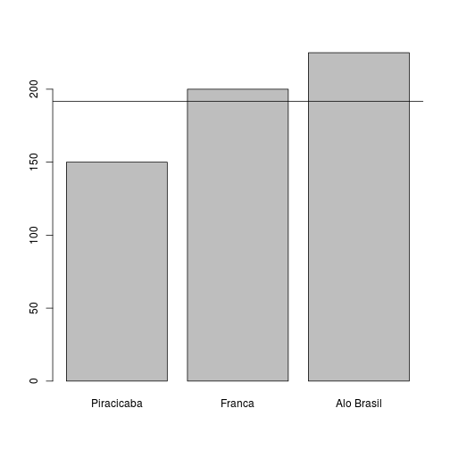
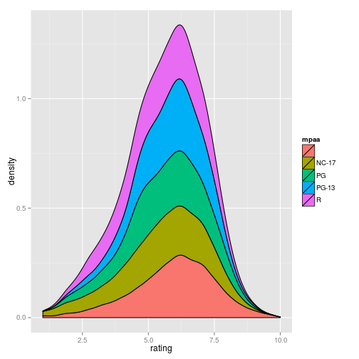
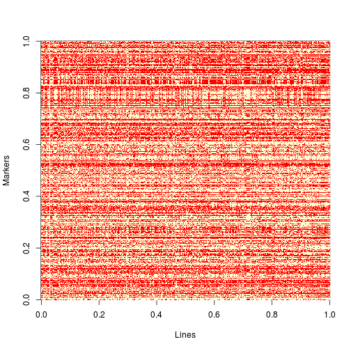
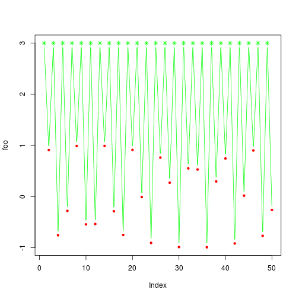

- Introduction
- Basic Syntax
- Object Types
- Graphics
Programming
Antonio Augusto F. Garcia
Introduction to R
A primer
Antonio Augusto Franco Garcia, Gabriel R. A. Margarido
Department of Genetics, ESALQ/USP
Outline
R Learning Curve

Few concepts can make a big difference
R
- Statistics
- Modeling
- Graphics
- Programming language
- Free
- Open Source
- Extensible
- DATA
"Lingua franca" of Statistics (Bioinformatics?)
But there is more!

... and more!

... and even more!
These very slides were produced using an R package: slidify
Exercise
4/3
## [1] 1.333
4%%3 # modulo operator
## [1] 1
You can write reports on R
Syntax: straightforward
Exercise
- Download the file report. It uses R Markdown syntax.
- Open it on RStudio
- Take a look on it, finding headers, lists (numbered, or items), and R chunks
- Try to add a few comments and R chunks
- Compile it to produce an html report
- (This is making usage of the amazing package knitr)
- Use it for taking notes during this course
For reproducibility:
sessionInfo()
## R version 2.15.2 (2012-10-26)
## Platform: x86_64-pc-linux-gnu (64-bit)
##
## locale:
## [1] LC_CTYPE=pt_BR.UTF-8 LC_NUMERIC=C
## [3] LC_TIME=pt_BR.UTF-8 LC_COLLATE=pt_BR.UTF-8
## [5] LC_MONETARY=pt_BR.UTF-8 LC_MESSAGES=pt_BR.UTF-8
## [7] LC_PAPER=C LC_NAME=C
## [9] LC_ADDRESS=C LC_TELEPHONE=C
## [11] LC_MEASUREMENT=pt_BR.UTF-8 LC_IDENTIFICATION=C
##
## attached base packages:
## [1] parallel graphics grDevices utils datasets stats methods
## [8] base
##
## other attached packages:
## [1] sos_1.3-8 R2G2_1.0-2 qtl_1.30-4
## [4] plyr_1.8 fortunes_1.5-2 brew_1.0-6
## [7] BLR_1.3 SuppDists_1.1-9.1 slidify_0.4
## [10] RColorBrewer_1.0-5 knitr_1.5 ggplot2_0.9.3.1
##
## loaded via a namespace (and not attached):
## [1] codetools_0.2-8 colorspace_1.2-4 compiler_2.15.2 dichromat_2.0-0
## [5] digest_0.6.4 evaluate_0.5.1 formatR_0.10 grid_2.15.2
## [9] gtable_0.1.2 labeling_0.2 markdown_0.6.4 MASS_7.3-23
## [13] munsell_0.4.2 proto_0.3-10 reshape2_1.2.2 scales_0.2.3
## [17] stringr_0.6.2 tools_2.15.2 whisker_0.3-2 yaml_2.1.10
Reproducible research is a very important
concept. Not only in order to allow others to reproduce and understand
what you did, but also to allow others to extend your research.
Programs with 'point and click' menus are not in line with this
concept.
R syntax
10 > 2
## [1] TRUE
(3 * 2) == 5 # caution: '==' is different than '='
## [1] FALSE
"Hello, world"
## [1] "Hello, world"
Variables
a <- 100
a
## [1] 100
a * 8
## [1] 800
a <- 20
a <- "New string"
a
## [1] "New string"
Functions
log(100)
## [1] 4.605
log10(100)
## [1] 2
sequence(5)
## [1] 1 2 3 4 5
seq(from = 0, to = 1, by = 0.2)
## [1] 0.0 0.2 0.4 0.6 0.8 1.0
Exercise
- Compute the square root of all numbers from 7 to 1458.
- Compute the square root of all even numbers from 7 to 1458.
Help!
help(seq)
`?`(seq)
help.search("histogram")
Exercise
- Find help about the function plot()
RSeek

Exercise
- Find R packages for "linkage mapping"
- Find R packages for "QTL mapping"
- "Genomic selection"
- (your choice)
Install and load packages
- Repositories: your choice, but closer is better
install.packages()
install.packages("fortunes")
library("fortunes")
fortune()
##
## I cannot remember if I have been using 14 or 14, I think it was 14 and I
## am not near the machine to check.
## -- John Kane (confused about his SPSS version)
## R-help (April 2007)
More help
install.packages("sos")
library("sos")
findFn("qtl")
## found 633 matches; retrieving 20 pages, 400 matches.
## 2 3 4 5 6 7 8 9 10
## 11 12 13 14 15 16 17 18 19 20
##
## Downloaded 354 links in 33 packages.
SOS!
findFn("metabolomic")
## found 65 matches; retrieving 4 pages
## 2 3 4
## Downloaded 63 links in 16 packages.
findFn("qtl mapping metabolomic")
## found 2 matches
## Downloaded 2 links in 1 packages.
Packages on your computer
installed.packages()
## Package
## bitops "bitops"
## BLR "BLR"
## colorspace "colorspace"
## devtools "devtools"
## dichromat "dichromat"
## digest "digest"
## evaluate "evaluate"
## formatR "formatR"
## fortunes "fortunes"
## ggplot2 "ggplot2"
## gtable "gtable"
## highr "highr"
## httr "httr"
## knitr "knitr"
## labeling "labeling"
## markdown "markdown"
## memoise "memoise"
## munsell "munsell"
## plyr "plyr"
## proto "proto"
## qtl "qtl"
## R2G2 "R2G2"
## RColorBrewer "RColorBrewer"
## RCurl "RCurl"
## reshape2 "reshape2"
## scales "scales"
## slidify "slidify"
## slidifyLibraries "slidifyLibraries"
## stringr "stringr"
## SuppDists "SuppDists"
## whisker "whisker"
## yaml "yaml"
## base "base"
## boot "boot"
## class "class"
## cluster "cluster"
## codetools "codetools"
## compiler "compiler"
## datasets "datasets"
## foreign "foreign"
## graphics "graphics"
## grDevices "grDevices"
## grid "grid"
## KernSmooth "KernSmooth"
## lattice "lattice"
## MASS "MASS"
## Matrix "Matrix"
## methods "methods"
## mgcv "mgcv"
## nlme "nlme"
## nnet "nnet"
## parallel "parallel"
## rpart "rpart"
## spatial "spatial"
## splines "splines"
## stats "stats"
## stats4 "stats4"
## survival "survival"
## tcltk "tcltk"
## tools "tools"
## utils "utils"
## LibPath
## bitops "/home/augusto/R/x86_64-pc-linux-gnu-library/2.15"
## BLR "/home/augusto/R/x86_64-pc-linux-gnu-library/2.15"
## colorspace "/home/augusto/R/x86_64-pc-linux-gnu-library/2.15"
## devtools "/home/augusto/R/x86_64-pc-linux-gnu-library/2.15"
## dichromat "/home/augusto/R/x86_64-pc-linux-gnu-library/2.15"
## digest "/home/augusto/R/x86_64-pc-linux-gnu-library/2.15"
## evaluate "/home/augusto/R/x86_64-pc-linux-gnu-library/2.15"
## formatR "/home/augusto/R/x86_64-pc-linux-gnu-library/2.15"
## fortunes "/home/augusto/R/x86_64-pc-linux-gnu-library/2.15"
## ggplot2 "/home/augusto/R/x86_64-pc-linux-gnu-library/2.15"
## gtable "/home/augusto/R/x86_64-pc-linux-gnu-library/2.15"
## highr "/home/augusto/R/x86_64-pc-linux-gnu-library/2.15"
## httr "/home/augusto/R/x86_64-pc-linux-gnu-library/2.15"
## knitr "/home/augusto/R/x86_64-pc-linux-gnu-library/2.15"
## labeling "/home/augusto/R/x86_64-pc-linux-gnu-library/2.15"
## markdown "/home/augusto/R/x86_64-pc-linux-gnu-library/2.15"
## memoise "/home/augusto/R/x86_64-pc-linux-gnu-library/2.15"
## munsell "/home/augusto/R/x86_64-pc-linux-gnu-library/2.15"
## plyr "/home/augusto/R/x86_64-pc-linux-gnu-library/2.15"
## proto "/home/augusto/R/x86_64-pc-linux-gnu-library/2.15"
## qtl "/home/augusto/R/x86_64-pc-linux-gnu-library/2.15"
## R2G2 "/home/augusto/R/x86_64-pc-linux-gnu-library/2.15"
## RColorBrewer "/home/augusto/R/x86_64-pc-linux-gnu-library/2.15"
## RCurl "/home/augusto/R/x86_64-pc-linux-gnu-library/2.15"
## reshape2 "/home/augusto/R/x86_64-pc-linux-gnu-library/2.15"
## scales "/home/augusto/R/x86_64-pc-linux-gnu-library/2.15"
## slidify "/home/augusto/R/x86_64-pc-linux-gnu-library/2.15"
## slidifyLibraries "/home/augusto/R/x86_64-pc-linux-gnu-library/2.15"
## stringr "/home/augusto/R/x86_64-pc-linux-gnu-library/2.15"
## SuppDists "/home/augusto/R/x86_64-pc-linux-gnu-library/2.15"
## whisker "/home/augusto/R/x86_64-pc-linux-gnu-library/2.15"
## yaml "/home/augusto/R/x86_64-pc-linux-gnu-library/2.15"
## base "/usr/lib/R/library"
## boot "/usr/lib/R/library"
## class "/usr/lib/R/library"
## cluster "/usr/lib/R/library"
## codetools "/usr/lib/R/library"
## compiler "/usr/lib/R/library"
## datasets "/usr/lib/R/library"
## foreign "/usr/lib/R/library"
## graphics "/usr/lib/R/library"
## grDevices "/usr/lib/R/library"
## grid "/usr/lib/R/library"
## KernSmooth "/usr/lib/R/library"
## lattice "/usr/lib/R/library"
## MASS "/usr/lib/R/library"
## Matrix "/usr/lib/R/library"
## methods "/usr/lib/R/library"
## mgcv "/usr/lib/R/library"
## nlme "/usr/lib/R/library"
## nnet "/usr/lib/R/library"
## parallel "/usr/lib/R/library"
## rpart "/usr/lib/R/library"
## spatial "/usr/lib/R/library"
## splines "/usr/lib/R/library"
## stats "/usr/lib/R/library"
## stats4 "/usr/lib/R/library"
## survival "/usr/lib/R/library"
## tcltk "/usr/lib/R/library"
## tools "/usr/lib/R/library"
## utils "/usr/lib/R/library"
## Version Priority
## bitops "1.0-6" NA
## BLR "1.3" NA
## colorspace "1.2-4" NA
## devtools "1.4.1" NA
## dichromat "2.0-0" NA
## digest "0.6.4" NA
## evaluate "0.5.1" NA
## formatR "0.10" NA
## fortunes "1.5-2" NA
## ggplot2 "0.9.3.1" NA
## gtable "0.1.2" NA
## highr "0.3" NA
## httr "0.2" NA
## knitr "1.5" NA
## labeling "0.2" NA
## markdown "0.6.4" NA
## memoise "0.1" NA
## munsell "0.4.2" NA
## plyr "1.8" NA
## proto "0.3-10" NA
## qtl "1.30-4" NA
## R2G2 "1.0-2" NA
## RColorBrewer "1.0-5" NA
## RCurl "1.95-4.1" NA
## reshape2 "1.2.2" NA
## scales "0.2.3" NA
## slidify "0.4" NA
## slidifyLibraries "0.3.1" NA
## stringr "0.6.2" NA
## SuppDists "1.1-9.1" NA
## whisker "0.3-2" NA
## yaml "2.1.10" NA
## base "2.15.2" "base"
## boot "1.3-7" "recommended"
## class "7.3-5" "recommended"
## cluster "1.14.3" "recommended"
## codetools "0.2-8" "recommended"
## compiler "2.15.2" "base"
## datasets "2.15.2" "base"
## foreign "0.8-52" "recommended"
## graphics "2.15.2" "base"
## grDevices "2.15.2" "base"
## grid "2.15.2" "base"
## KernSmooth "2.23-8" "recommended"
## lattice "0.20-13" "recommended"
## MASS "7.3-23" "recommended"
## Matrix "1.0-11" "recommended"
## methods "2.15.2" "base"
## mgcv "1.7-22" "recommended"
## nlme "3.1-108" "recommended"
## nnet "7.3-5" "recommended"
## parallel "2.15.2" "base"
## rpart "4.1-0" "recommended"
## spatial "7.3-5" "recommended"
## splines "2.15.2" "base"
## stats "2.15.2" "base"
## stats4 "2.15.2" "base"
## survival "2.37-2" "recommended"
## tcltk "2.15.2" "base"
## tools "2.15.2" "base"
## utils "2.15.2" "base"
## Depends
## bitops NA
## BLR "R (>= 2.10), SuppDists"
## colorspace "R (>= 2.13.0), methods"
## devtools "R (>= 2.15)"
## dichromat "R (>= 2.10), stats"
## digest "R (>= 2.4.1)"
## evaluate "R (>= 2.14.0)"
## formatR NA
## fortunes NA
## ggplot2 "R (>= 2.14), stats, methods"
## gtable "R (>= 2.14), grid"
## highr NA
## httr NA
## knitr "R (>= 2.14.1)"
## labeling NA
## markdown "R (>= 2.11.1)"
## memoise NA
## munsell NA
## plyr "R (>= 2.11.0)"
## proto NA
## qtl "R (>= 2.14.0), graphics, stats, parallel, utils"
## R2G2 NA
## RColorBrewer "R (>= 2.0.0)"
## RCurl "R (>= 2.7.0), methods, bitops"
## reshape2 NA
## scales "R (>= 2.12), methods"
## slidify "\nR (>= 2.15.0)"
## slidifyLibraries NA
## stringr "R (>= 2.14)"
## SuppDists NA
## whisker NA
## yaml NA
## base NA
## boot "R (>= 2.14.0), graphics, stats"
## class "R (>= 2.5.0), stats, utils"
## cluster "R (>= 2.10.0), stats, graphics, utils"
## codetools "R (>= 2.1)"
## compiler NA
## datasets NA
## foreign "R (>= 2.14.0), stats"
## graphics NA
## grDevices NA
## grid NA
## KernSmooth "R (>= 2.5.0), stats"
## lattice "R (>= 2.15.1)"
## MASS "R (>= 2.14.0), grDevices, graphics, stats, utils"
## Matrix "R (>= 2.15.0), stats, methods, utils, lattice"
## methods NA
## mgcv "R (>= 2.14.0), stats, graphics"
## nlme "graphics, stats, R (>= 2.14.0), R (< 3.0.0)"
## nnet "R (>= 2.5.0), stats, utils"
## parallel NA
## rpart "R (>= 2.14.0), graphics, stats, grDevices"
## spatial "R (>= 2.5.0), graphics, stats, utils"
## splines NA
## stats NA
## stats4 "methods, graphics, stats"
## survival "stats, utils, graphics, splines, R (>= 2.13.0)"
## tcltk NA
## tools NA
## utils NA
## Imports
## bitops NA
## BLR NA
## colorspace NA
## devtools "httr, RCurl, utils, tools, methods, memoise, whisker,\nevaluate, digest"
## dichromat NA
## digest NA
## evaluate "stringr (>= 0.4)"
## formatR NA
## fortunes "utils"
## ggplot2 "plyr (>= 1.7.1), digest, grid, gtable (>= 0.1.1), reshape2,\nscales (>= 0.2.3), proto, MASS"
## gtable NA
## highr NA
## httr "RCurl (>= 1.95-0), stringr (>= 0.6.1), digest, tools"
## knitr "evaluate (>= 0.4.7), digest, formatR (>= 0.9), highr (>= 0.2),\nmarkdown (>= 0.6.3), stringr (>= 0.6), tools"
## labeling NA
## markdown NA
## memoise "digest"
## munsell "colorspace"
## plyr NA
## proto NA
## qtl NA
## R2G2 NA
## RColorBrewer NA
## RCurl "methods"
## reshape2 "plyr (>= 1.5), stringr, lattice"
## scales "RColorBrewer, stringr, dichromat, munsell (>= 0.2), plyr (>=\n1.2), labeling"
## slidify "\nknitr (>= 0.1),\nmarkdown,\nstringr,\nyaml,\nwhisker"
## slidifyLibraries NA
## stringr NA
## SuppDists NA
## whisker NA
## yaml NA
## base NA
## boot NA
## class "MASS"
## cluster NA
## codetools NA
## compiler NA
## datasets NA
## foreign "methods, utils"
## graphics "grDevices"
## grDevices NA
## grid "grDevices"
## KernSmooth NA
## lattice "grid, grDevices, graphics, stats, utils"
## MASS NA
## Matrix "graphics, grid"
## methods "utils"
## mgcv "nlme, methods, Matrix"
## nlme "lattice"
## nnet NA
## parallel NA
## rpart NA
## spatial NA
## splines "graphics, stats"
## stats NA
## stats4 NA
## survival NA
## tcltk NA
## tools NA
## utils NA
## LinkingTo
## bitops NA
## BLR NA
## colorspace NA
## devtools NA
## dichromat NA
## digest NA
## evaluate NA
## formatR NA
## fortunes NA
## ggplot2 NA
## gtable NA
## highr NA
## httr NA
## knitr NA
## labeling NA
## markdown NA
## memoise NA
## munsell NA
## plyr NA
## proto NA
## qtl NA
## R2G2 NA
## RColorBrewer NA
## RCurl NA
## reshape2 NA
## scales NA
## slidify NA
## slidifyLibraries NA
## stringr NA
## SuppDists NA
## whisker NA
## yaml NA
## base NA
## boot NA
## class NA
## cluster NA
## codetools NA
## compiler NA
## datasets NA
## foreign NA
## graphics NA
## grDevices NA
## grid NA
## KernSmooth NA
## lattice NA
## MASS NA
## Matrix NA
## methods NA
## mgcv NA
## nlme NA
## nnet NA
## parallel NA
## rpart NA
## spatial NA
## splines NA
## stats NA
## stats4 NA
## survival NA
## tcltk NA
## tools NA
## utils NA
## Suggests
## bitops NA
## BLR NA
## colorspace "KernSmooth, MASS, kernlab, mvtnorm, vcd, tcltk, dichromat"
## devtools "testthat (>= 0.7), roxygen2, BiocInstaller, Rcpp (>= 0.10.0),\nMASS, knitr, rstudio"
## dichromat NA
## digest NA
## evaluate "testthat, ggplot2"
## formatR "codetools, gWidgetsRGtk2, testit, knitr"
## fortunes NA
## ggplot2 "quantreg, Hmisc, mapproj, maps, hexbin, maptools, multcomp,\nnlme, testthat"
## gtable "testthat, plyr"
## highr "knitr, testit"
## httr "rjson, XML, testthat, png, jpeg, Rook"
## knitr "testit, rgl, codetools, XML, RCurl"
## labeling NA
## markdown "knitr, RCurl"
## memoise NA
## munsell "ggplot2 (>= 0.9.2)"
## plyr "abind, testthat (>= 0.2), tcltk, foreach, doMC, itertools,\niterators"
## proto "graph, Rgraphviz"
## qtl NA
## R2G2 NA
## RColorBrewer NA
## RCurl "Rcompression, XML"
## reshape2 "testthat"
## scales "testthat"
## slidify NA
## slidifyLibraries NA
## stringr "testthat (>= 0.3)"
## SuppDists NA
## whisker "markdown"
## yaml "testthat"
## base NA
## boot "MASS, survival"
## class NA
## cluster "MASS"
## codetools NA
## compiler NA
## datasets NA
## foreign NA
## graphics NA
## grDevices NA
## grid "lattice"
## KernSmooth "MASS"
## lattice "grid, KernSmooth, MASS"
## MASS "lattice, nlme, nnet, survival"
## Matrix "expm, MASS"
## methods NA
## mgcv "nlme (>= 3.1-64), splines, Matrix, parallel"
## nlme "Hmisc, MASS"
## nnet "MASS"
## parallel NA
## rpart "survival"
## spatial "MASS"
## splines NA
## stats NA
## stats4 NA
## survival NA
## tcltk NA
## tools NA
## utils NA
## Enhances OS_type
## bitops NA NA
## BLR NA NA
## colorspace NA NA
## devtools NA NA
## dichromat NA NA
## digest NA NA
## evaluate NA NA
## formatR NA NA
## fortunes NA NA
## ggplot2 "sp" NA
## gtable NA NA
## highr NA NA
## httr NA NA
## knitr NA NA
## labeling NA NA
## markdown NA NA
## memoise NA NA
## munsell NA NA
## plyr NA NA
## proto NA NA
## qtl NA NA
## R2G2 NA NA
## RColorBrewer NA NA
## RCurl NA NA
## reshape2 NA NA
## scales NA NA
## slidify NA NA
## slidifyLibraries NA NA
## stringr NA NA
## SuppDists NA NA
## whisker NA NA
## yaml NA NA
## base NA NA
## boot NA NA
## class NA NA
## cluster NA NA
## codetools NA NA
## compiler NA NA
## datasets NA NA
## foreign NA NA
## graphics NA NA
## grDevices NA NA
## grid NA NA
## KernSmooth NA NA
## lattice "chron" NA
## MASS NA NA
## Matrix "MatrixModels, graph, SparseM, sfsmisc" NA
## methods NA NA
## mgcv NA NA
## nlme NA NA
## nnet NA NA
## parallel "snow" NA
## rpart NA NA
## spatial NA NA
## splines NA NA
## stats NA NA
## stats4 NA NA
## survival NA NA
## tcltk NA NA
## tools NA NA
## utils NA NA
## License Built
## bitops "GPL (>= 2)" "2.15.2"
## BLR "GPL-2" "2.15.2"
## colorspace "BSD_3_clause + file LICENSE" "2.15.2"
## devtools "GPL (>= 2)" "2.15.2"
## dichromat "GPL-2" "2.15.2"
## digest "GPL-2" "2.15.2"
## evaluate "GPL" "2.15.2"
## formatR "GPL" "2.15.2"
## fortunes "GPL-2" "2.15.2"
## ggplot2 "GPL-2" "2.15.2"
## gtable "GPL-2" "2.15.2"
## highr "GPL" "2.15.2"
## httr "MIT" "2.15.2"
## knitr "GPL" "2.15.2"
## labeling "MIT | Unlimited" "2.15.2"
## markdown "GPL-2" "2.15.2"
## memoise "MIT" "2.15.2"
## munsell "MIT + file LICENSE" "2.15.2"
## plyr "MIT" "2.15.2"
## proto "GPL-2" "2.15.2"
## qtl "GPL-3" "2.15.2"
## R2G2 "LGPL" "2.15.2"
## RColorBrewer "Apache License 2.0" "2.15.2"
## RCurl "BSD" "2.15.2"
## reshape2 "MIT" "2.15.2"
## scales "MIT" "2.15.2"
## slidify "MIT" "2.15.2"
## slidifyLibraries "MIT" "2.15.2"
## stringr "GPL-2" "2.15.2"
## SuppDists "GPL (>= 2)" "2.15.2"
## whisker "GPL-3" "2.15.2"
## yaml "BSD_3_clause + file LICENSE" "2.15.2"
## base "Part of R 2.15.2" "2.15.2"
## boot "Unlimited" "2.15.1"
## class "GPL-2 | GPL-3" "2.15.1"
## cluster "GPL (>= 2)" "2.15.1"
## codetools "GPL" "2.12.1"
## compiler "Part of R 2.15.2" "2.15.2"
## datasets "Part of R 2.15.2" "2.15.2"
## foreign "GPL (>= 2)" "2.15.2"
## graphics "Part of R 2.15.2" "2.15.2"
## grDevices "Part of R 2.15.2" "2.15.2"
## grid "Part of R 2.15.2" "2.15.2"
## KernSmooth "Unlimited" "2.15.1"
## lattice "GPL (>= 2)" "2.15.2"
## MASS "GPL-2 | GPL-3" "2.15.2"
## Matrix "GPL (>= 2)" "2.15.2"
## methods "Part of R 2.15.2" "2.15.2"
## mgcv "GPL (>= 2)" "2.15.1"
## nlme "GPL (>= 2)" "2.15.2"
## nnet "GPL-2 | GPL-3" "2.15.1"
## parallel "Part of R 2.15.2" "2.15.2"
## rpart "GPL-2 | GPL-3" "2.15.2"
## spatial "GPL-2 | GPL-3" "2.15.1"
## splines "Part of R 2.15.2" "2.15.2"
## stats "Part of R 2.15.2" "2.15.2"
## stats4 "Part of R 2.15.2" "2.15.2"
## survival "LGPL (>= 2)" "2.15.2"
## tcltk "Part of R 2.15.2" "2.15.2"
## tools "Part of R 2.15.2" "2.15.2"
## utils "Part of R 2.15.2" "2.15.2"
Keep up to date
update.packages()
Saving
- R source code
- Image
save.image("example.Rdata")
load.image("example.Rdata")
Exercise
- Install and load the package "ggplot2"
- Take a look on the help file
- Run at least one example
- Save the code and the image
Run the examples is helpful
Exercise
- Run the examples of the functions below
example(ggplot)
example(plot)
example(hist)
Get ready for reading help files, manuals, books, and using the
web (Forums as well). These are extremely useful resources. Do not be
lazy!
Objects: Vectors
c(1, 3, 5, 7) # combine, not concatenate!
## [1] 1 3 5 7
c(TRUE, FALSE, TRUE, TRUE)
## [1] TRUE FALSE TRUE TRUE
bb <- c(100, "Fisher", TRUE)
bb
## [1] "100" "Fisher" "TRUE"
Vectors
seq(1, 10)
## [1] 1 2 3 4 5 6 7 8 9 10
1:10 # will be useful later
## [1] 1 2 3 4 5 6 7 8 9 10
Indexing vectors
x <- seq(10, 100, by = 10)
x
## [1] 10 20 30 40 50 60 70 80 90 100
x[4] # one-based indexing
## [1] 40
x[2] <- -200
x
## [1] 10 -200 30 40 50 60 70 80 90 100
Indexing vectors
x
## [1] 10 -200 30 40 50 60 70 80 90 100
x[3:5]
## [1] 30 40 50
x[c(3, 5)] # mind the difference!
## [1] 30 50
Naming vectors
yield <- c(150, 200, 225)
names(yield) <- c("Piracicaba", "Franca", "Alo Brasil")
yield
## Piracicaba Franca Alo Brasil
## 150 200 225
yield["Alo Brasil"]
## Alo Brasil
## 225
Arithmetic Operations
x <- c(10, 20, 40, 80)
x + 10
## [1] 20 30 50 90
x * 2
## [1] 20 40 80 160
y <- c(0, -10, 5, -20)
x + y
## [1] 10 10 45 60
Arithmetic Operations
x <- c(5, 25, 30, 100, 0, -1, NA)
log(x)
## Warning: NaNs produzidos
## [1] 1.609 3.219 3.401 4.605 -Inf NaN NA
Recycling
- Attention!
a <- c(1, 2, 3, 4)
b <- 1:3
(c <- a + b)
## Warning: comprimento do objeto maior no mltiplo do comprimento do
## objeto menor
## [1] 2 4 6 5
Summary Statistics
d <- c(10, 8, 12, 7, 6, 9, 8, 13, 10, 7)
mean(d)
## [1] 9
median(d)
## [1] 8.5
Summary Statistics
sd(d)
## [1] 2.261
var(d)
## [1] 5.111
Remember, objects
mode(yield)
## [1] "numeric"
mode(bb)
## [1] "character"
class(x)
## [1] "numeric"
str(x)
## num [1:7] 5 25 30 100 0 -1 NA
Exercise
- Create an object (vector) with values 1, 2, 3, 4, 5
- Multiply it by 2, saving it in another object
- Explore the objects in RStudio
Matrices
"Vectors with two-dimensions"
matrix(0, 2, 3)
## [,1] [,2] [,3]
## [1,] 0 0 0
## [2,] 0 0 0
x <- 1:6
(x <- matrix(x, 2, 3))
## [,1] [,2] [,3]
## [1,] 1 3 5
## [2,] 2 4 6
Indexing elements is trivial
x
## [,1] [,2] [,3]
## [1,] 1 3 5
## [2,] 2 4 6
dim(x)
## [1] 2 3
x[1, 3]
## [1] 5
x[1, 3] <- 10
x
## [,1] [,2] [,3]
## [1,] 1 3 10
## [2,] 2 4 6
x[2, ]
## [1] 2 4 6
x[, c(1, 3)]
## [,1] [,2]
## [1,] 1 10
## [2,] 2 6
Objects
mode(x)
## [1] "numeric"
class(x)
## [1] "matrix"
str(x)
## num [1:2, 1:3] 1 2 3 4 10 6
Exercise
- Replace the element on row 2, column 2, in matrix x, by 999
Matrix Algebra
A little different from what one would expect
(x <- matrix(c(1, 2, 3, 4), 2, 2))
## [,1] [,2]
## [1,] 1 3
## [2,] 2 4
(y <- matrix(c(10, 20, 30, 40), 2, 2))
## [,1] [,2]
## [1,] 10 30
## [2,] 20 40
(x + y)
## [,1] [,2]
## [1,] 11 33
## [2,] 22 44
(x * y) #elementwise
## [,1] [,2]
## [1,] 10 90
## [2,] 40 160
(x %*% y) #matrix multiplication
## [,1] [,2]
## [1,] 70 150
## [2,] 100 220
Factors
geno_calls <- c("AA", "aa", "aa", "Aa", "AA", "Aa")
geno_calls
## [1] "AA" "aa" "aa" "Aa" "AA" "Aa"
genotypes <- factor(geno_calls)
genotypes
## [1] AA aa aa Aa AA Aa
## Levels: aa Aa AA
levels(genotypes)
## [1] "aa" "Aa" "AA"
mode(genotypes)
## [1] "numeric"
class(genotypes)
## [1] "factor"
str(genotypes)
## Factor w/ 3 levels "aa","Aa","AA": 3 1 1 2 3 2
Why factors?
- They play a central role in statistical analysis
phenotypes <- c(7, 4, 3, 7, 9, 8)
model <- lm(phenotypes ~ genotypes)
model
##
## Call:
## lm(formula = phenotypes ~ genotypes)
##
## Coefficients:
## (Intercept) genotypesAa genotypesAA
## 3.5 4.0 4.5
summary(model)
##
## Call:
## lm(formula = phenotypes ~ genotypes)
##
## Residuals:
## 1 2 3 4 5 6
## -1.0 0.5 -0.5 -0.5 1.0 0.5
##
## Coefficients:
## Estimate Std. Error t value Pr(>|t|)
## (Intercept) 3.500 0.707 4.95 0.016
## genotypesAa 4.000 1.000 4.00 0.028
## genotypesAA 4.500 1.000 4.50 0.020
##
## Residual standard error: 1 on 3 degrees of freedom
## Multiple R-squared: 0.89, Adjusted R-squared: 0.817
## F-statistic: 12.2 on 2 and 3 DF, p-value: 0.0364
model <- lm(phenotypes ~ as.numeric(genotypes))
summary(model)
##
## Call:
## lm(formula = phenotypes ~ as.numeric(genotypes))
##
## Residuals:
## 1 2 3 4 5 6
## -1.5833 -0.0833 -1.0833 0.6667 0.4167 1.6667
##
## Coefficients:
## Estimate Std. Error t value Pr(>|t|)
## (Intercept) 1.833 1.437 1.28 0.271
## as.numeric(genotypes) 2.250 0.665 3.38 0.028
##
## Residual standard error: 1.33 on 4 degrees of freedom
## Multiple R-squared: 0.741, Adjusted R-squared: 0.676
## F-statistic: 11.4 on 1 and 4 DF, p-value: 0.0277
R is a vectorial language
tapply(phenotypes, INDEX = genotypes, FUN = mean)
## aa Aa AA
## 3.5 7.5 8.0
Exercise
- When you have time, learn about the apply family
Reading data
mouse <- read.csv("mouse.csv")
head(mouse)
## IND BW M1 M2 M3 M4 M5 M6 M7 M8 M9 M10 M11 M12 M13 M14
## 1 1 50 1 1 1 1 1 1 1 1 1 1 1 1 1 1
## 2 2 54 1 1 1 1 1 1 1 1 1 1 1 1 1 0
## 3 3 49 0 1 1 1 1 1 1 1 1 1 1 1 1 1
## 4 4 41 0 0 0 0 0 0 0 0 0 0 0 0 0 0
## 5 5 36 1 1 1 1 1 1 1 1 1 1 1 1 1 1
## 6 6 48 0 0 0 0 0 0 0 0 0 0 0 0 0 0
tail(mouse)
## IND BW M1 M2 M3 M4 M5 M6 M7 M8 M9 M10 M11 M12 M13 M14
## 98 98 56 0 0 0 0 0 0 0 0 0 0 0 0 0 0
## 99 99 50 0 0 0 0 0 0 0 0 0 0 0 0 0 0
## 100 100 45 1 1 1 1 0 0 0 0 0 0 0 0 0 0
## 101 101 43 1 1 1 0 0 0 0 0 0 0 0 0 0 0
## 102 102 37 0 0 0 0 0 0 0 0 0 0 0 0 0 1
## 103 103 35 1 0 0 0 0 0 0 0 0 0 0 0 0 0
We can read from the web
maize <- read.csv("http://dl.dropbox.com/u/1968009/maize.csv")
nba <- read.csv("http://datasets.flowingdata.com/ppg2008.csv", sep = ",")
nba[1:3, ]
## Name G MIN PTS FGM FGA FGP FTM FTA FTP X3PM X3PA X3PP
## 1 Dwyane Wade 79 38.6 30.2 10.8 22.0 0.491 7.5 9.8 0.765 1.1 3.5 0.317
## 2 LeBron James 81 37.7 28.4 9.7 19.9 0.489 7.3 9.4 0.780 1.6 4.7 0.344
## 3 Kobe Bryant 82 36.2 26.8 9.8 20.9 0.467 5.9 6.9 0.856 1.4 4.1 0.351
## ORB DRB TRB AST STL BLK TO PF
## 1 1.1 3.9 5.0 7.5 2.2 1.3 3.4 2.3
## 2 1.3 6.3 7.6 7.2 1.7 1.1 3.0 1.7
## 3 1.1 4.1 5.2 4.9 1.5 0.5 2.6 2.3
Graphics
x <- seq(0, 20, 0.5)
y <- x^2
plot(x, y)
hist(rnorm(500, 5, 25))

Barplot
barplot(yield)
abline(h = mean(yield))

How to customize
x <- rnorm(10)
y <- rnorm(10)
plot(x, y)
plot(sort(x), sort(y), type = "l")

plot(x, y, xlab = "Ten random values", ylab = "Ten other values", xlim = c(-2,
2), ylim = c(-2, 2), pch = 22, col = "red", bg = "yellow", bty = "l", tcl = 0.4,
main = "How to customize a plot with R", las = 1, cex = 1.5)

Exercise
- Try the following:
demo(graphics)
- Read the codes to start learning a few things
ggplot2: An Amazing Package for Graphics
m <- ggplot(movies, aes(x = rating))
m + geom_density()

qplot(rating, ..density.., data = movies, geom = "density", fill = mpaa, position = "stack")

Heatmap
library(BLR)
data(wheat)
dim(X)
## [1] 599 1279
X[101:105, 1001:1005]
## c.348129 c.348141 c.348181 c.348186 c.348206
## [1,] 1 1 0 1 1
## [2,] 0 1 1 1 1
## [3,] 0 1 1 0 1
## [4,] 1 1 1 0 1
## [5,] 0 0 1 1 1
image(X, xlab = "Lines", ylab = "Markers")

Programming - few essential concepts
Loops using 'for'
iter <- 0
for (i in 1:50) {
iter <- iter + 1
}
iter
## [1] 50
Loops using 'while'
iter <- 1
while (iter < 50) {
iter <- iter + 1
}
iter
## [1] 50
Allocating elements in for loops
foo <- rep(NA, 100)
for (i in 1:100) {
foo[i] <- sin(i)
}
foo[1:20]
## [1] 0.8415 0.9093 0.1411 -0.7568 -0.9589 -0.2794 0.6570 0.9894
## [9] 0.4121 -0.5440 -1.0000 -0.5366 0.4202 0.9906 0.6503 -0.2879
## [17] -0.9614 -0.7510 0.1499 0.9129
plot(foo, type = "l")

Conditional statements - extremely important
foo <- rep(NA, 100)
for (i in 1:100) {
if (i%%2 == 0) {
foo[i] <- sin(i)
} else {
foo[i] <- 3
}
}
plot(foo, type = "b", col = c("green", "red"), pch = c(8, 20))

These all be can be used in 'functions'
funny.plot <- function(iterations) {
foo <- rep(NA, iterations)
for (i in 1:iterations) {
if (i%%2 == 0) {
foo[i] <- sin(i)
} else {
foo[i] <- 3
}
}
plot(foo, type = "b", col = c("green", "red"), pch = c(8, 20))
}
Try different values for the argument
funny.plot(50)

References
Introducing R to a non-programmer in one hour
Introductory Statistics with R